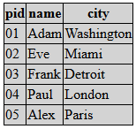
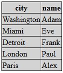

Query formatter
The automatic query formatter is part of "forms" module which depends on "core" and "sql" modules.
In fact this page describes the using of to_table() function.
This function is a versatile and highly customisable table generator, which primary goal is to generate raw and well designed
table outputs from sql queries and two dimensional arrays.
This function can be used in early development phase to show raw query outputs as well to generate highly customised/designed
tables in production code.
Automatic output generator for sql queries
You can pass the result of the sql_exec_fetchAll() function to the to_table() function.
The to_table() will generate a html table to show the data.
to_table($dataobj, array $options=[], array &$results = NULL)
//Example - Raw output without any modifier
$data = sql_exec_fetchAll('SELECT pid,name,city FROM people;');
print to_table($data);
Input of to_table()
The $dataobj parameter of to_table() function can be:
- Two dimensional array
- Executed sql object
The to_table function is designed to work same way both cases.
Example with case 1a:
$data = sql_exec_fetchAll('SELECT pid,name,city FROM people;');
print to_table($data);
Example with case 1b:
$data = [['Red' ,'Apple' ,'One' ],
['Yellow','Banana','Two' ],
['Brown' ,'Nut' ,'Three' ]];
print to_table($data);
Example with case 2:
$data = sql_exec('SELECT pid,name,city FROM people;');
print to_table($data);
In the example 1a and 1b the to_table() receives a two dimensional arrays while in the example 2 it receives
an executed sql query. In the second case the function fetch all rows data to show.
Output of to_table()
By default the to_table() function returns the strings of the generated html table. With special options you can
make to_table() to generate ExcelXml output instead of html table.
(See #output_object modifier below)
The to_table() function generates a brand new table or excel xml object which appears as an individual table.
It's possible to use to_table() to adds the generated data to an existing (and not empty) table or excel xml object.
Typical useful scenario when you generate a large excel xml document with more different tables in one worksheet.
(See #return_disabled modifier below)
Options affects the whole table
We can pass an $options array to the second parameter of the to_table() which tells
some formatting instruction to the table generator.
Options affects the whole table tag:
#output_objecttable- Generates a html table. (default)excelxml- Generates a ExcelXml output
#tableoptsborder- Set the border of the tablestyle- CSS style for table tagclass- CSS class of the table tag
#lineskip_callback- Callback function to make possible to completely skip some lines of the table. In case of this callback is present the to_table() calls before every row drawing. If the function returntruethe line is not drawn. The function receive the array of the fields of the subjected row. (All fields and other fields like__rownumber__or__external__)#lineoptions_callback- Callback function which can feed the HtmlTable's nrow() function.- This callback function will called on every row creation in table and the returned array will pass to the HtmlTable's nrow() function. So you can set style and classes of the html tr element depending on query values.
- The callback receive same parameters as
valuecallback's function below. (All sql fields and other fields like__rownumber__or__external__)
#callback_array_external- Arbitrary array or object passed to the internal callback functions.- The variable's value is passed to the callback functions defined under
#lineoptions_callbackandvaluecallback. These callback functions will receive the array under their parameter's__external__field name.
- The variable's value is passed to the callback functions defined under
#return_disabled- If this option is set and the value istruethe to_table() function does not generate and returns the html output of the table. This option is useful when the to_table() do the work into an external passed HtmlTable or ExcelXmlDocument object. (Opposite to the usual way when the returned string is used as output) This case you have to create HtmlTable or ExcelXmlDocument object before calling to_table() and pass to the function in the$resultsparameter's "target" field.- Example:
$mytable = new HtmlTable("my");
$results = ["target" => $mytable];
to_table($tbl,["#return_disabled" => true],$results);
- Example:
#before- You can set function name/callback here to insert some data before the generated table.- The return value of the callback will be used to insert before the table.
- The callback receives the output object as a parameter, so it can add some data directly to the output object. (as side effect)
- By compatibility reasons the printed output of the callback will used as output if empty string returned!
#after- You can set function name/callback here to insert some data after the generated table.- The return value of the callback will be used to insert after the table.
- The callback receives the output object as a parameter, so it can add some data directly to the output object. (as side effect)
- By compatibility reasons the printed output of the callback will used as output if empty string returned!
#fields- Controls the generated fields/columns (See documentation below)#default_headeropts- Sets the default options array for the columns where the#headeroptsis not present.- The value is same as usable for
#headeropts.
- The value is same as usable for
#default_cellopts- Sets the default options array for the cells where the#celloptsis not present.- The value is same as usable for
#cellopts.
- The value is same as usable for
Let's see an example of using this options above:
$c = [
'#tableopts' => [
'border' => '1',
'style' => 'background-color: lightgray; border-collapse: collapse;']
];
$data = sql_exec_fetchAll('SELECT pid,name,city FROM people;');
print to_table($data,$c);
| From | to |  |
#lineoptions_callback:
$c = [
'#tableopts' => [
'border' => '1',
'style' => 'border-collapse: collapse;'],
'#lineoptions_callback' => function($r) {
if($r['__rownumber__']%3 == 2)
return ['style' => 'background-color: #aaaaaa;'];
if($r['__rownumber__']%3 == 1)
return ['style' => 'background-color: #bbbbbb;'];
return ['style' => 'background-color: #cccccc;'];
},
];
$data = sql_exec_fetchAll('SELECT pid,name,city FROM people;');
print to_table($data,$c);
| From | to |
Change the number or/and the order of the fields
You can change the number or/and the order of the rows by set #fields value.
In case the #fields value is set, it overwrites the field orders.
You can safety change orders or skip some
fields here. You can even add fields which doesn't exists in the original query. (See later examples)
The #fields value is an array contains field names which can came from:
- The sql name of the column in query
- The index string of the inner associative array if two dimensional array is received.
- A section name which exists in the
$optionsarray. (Virtual field) - A field repository name. (See later)
The fields will be displayed in the results table as is ordered in the #fields array.
Let's see the using of #fields here:
$c = [
'#tableopts' => [
'border' => '1',
'style' => 'background-color: lightgray; border-collapse: collapse;'],
'#fields' => ['city','name'],
];
$data = sql_exec_fetchAll('SELECT pid,name,city FROM people;');
print to_table($data,$c);
| From | to |  |
Customize of fields
You can customize the displayed fields and headers of the fields by the options array.
Every top level index of the array which does not start with # sign is assigned to a field
matched to the original query field name or a virtual field which only exists in #fields array.
Fields definitions can receive the following options
headertext- Sets the text of the table header of this fieldheadertextcallback- Sets a callback function which returns the text of the header of this field- The callback receive the header text string as parameter
headeropts- Options affects of the table header of this fieldstyle- CSS style for the header tagclass- CSS class of the header tag- Every cell modifier option can be used here jointly with the
"type" => "uni"option.
cellprefix- Print this string immediately before the cell's valuecellsuffix- Print this string immediately after the cell's valuecellopts- Options affects of the cellstyle- CSS style for the cellclass- CSS class of the cell- Every cell modifier option can be used here jointly with the
"type" => "uni"option.
celloptscallback- Sets a callback function which retrun the value ofcellopts.- The callback receive the header text string as parameter
valuecallback- Value callback (See the next chapter)skip- Does not show the field itself. See explanation later.sqlname- Sets the fields sql name. See explanation later.
Let's see an example using of this options:
$c = [
'#tableopts' => [
'border' => '1',
'style' => 'background-color: lightgray; border-collapse: collapse;'],
'#fields' => ['name','city'],
'name' => [
'headertext' => 'The name',
'headeropts' => ['style' => 'background-color: yellow;'],
],
'city' => [
'headertext' => 'Works in',
'headeropts' => ['style' => 'background-color: brown;'],
'cellprefix' => '<i>',
'cellsuffix' => '</i>',
'cellopts' => ['style' => 'background-color: lightgrey;'],
],
];
$data = sql_exec_fetchAll('SELECT pid,name,city FROM people;');
print to_table($data,$c);
| From | to |
The restricted options begins the original option name and a : letter and the output name used in
#output_object.
As the usable outputs is the "table" and "excelxml" the restricted modifiers looks like this way:
$c = [
...
'name' => [
"headertext:table" => "The Name in web",
"headertext:excelxml" => "The Name in excel",
"headeropts" => ['type' => 'uni',
't' => 'str',
'background-color' => '#454545',
'color' => '#efefef',
'border' => 'all'],
"cellopts:table" => ['type' => 'uni',
't' => 'str',
'background-color' => '#ccffcc'],
"cellopts:excelxml" => ['type' => 'uni',
't' => 'str',
'background-color' => '#ddeedd',
'border' => 'all'],
],
...
];
Modify the value of the fields
You can change the value of a field by a callback function. The callback function is receive all fields value so can provide derived data from other fields. (You have to provide this callback in case the field is virtual thus not exists in original query)
You can set callback function by set valuecallback option.
The return value of the callback will be displayed in the cell.
The callback function receive an array as parameter. This array contains all sql fields found in the sql query and
a __rownumber__ named element which contains a row number sequence. The array also contains
an __external__ field which is an array received in to_table() $options parameter
under the #callback_array_external index name.
The callback function can receive a second parameter too, which contains the current column name.
$c = [
'#tableopts' => [
'border' => '1',
'style' => 'background-color: lightgray; border-collapse: collapse;'],
'#fields' => ['name','city'],
'name' => [
'headertext' => 'The name',
'headeropts' => ['style' => 'background-color: yellow;'],
'valuecallback' => function($r) {
return l($r['name'],'useredit',[],['id' => $r['pid']]);
},
],
];
$data = sql_exec_fetchAll('SELECT pid,name,city FROM people;');
print to_table($data,$c);
| From | to |
Using virtual fields
With the valuecallback option you can create fields which not presents in original query.
Let's see an example where the "selector" field is virtual:
$c = [
'#tableopts' => [
'border' => '1',
'style' => 'background-color: lightgray; border-collapse: collapse;'],
'#fields' => ['name','city','selector'],
'name' => [
'headertext' => 'The name',
'headeropts' => ['style' => 'background-color: yellow;'],
'valuecallback' => function($r) {
return l($r['name'],'useredit',[],['id' => $r['pid']]);
},
],
'selector' => [
'headertext' => '-',
'headeropts' => ['style' => 'background-color: red;'],
'valuecallback' => function($r) {
return l('Select...','edit',[],['id' => $r['pid']]);
},
],
];.
$data = sql_exec_fetchAll('SELECT pid,name,city FROM people;');
print to_table($data,$c);
| From | to |
Using field repository
You can see many field settings in the examples above. In a complex code many case this field options is repeating. You can reuse this field options by using field repository: You can add field options/settings to the field repository and can apply this settings to an arbitrary query's field.
You can add field definitions to the field repository by implementing
HOOK_field_repository hook.
The HOOK_field_repository hook have to return an array with the defined field names.
The defined field names will presents in the field repository with # prefix.
Every time you put a # prefixed field in the #fields array or
pass an sql query containing # prefixed column names the field repository
will be used to the appropriate field.
You can use every field option in the field repository and some additional options:
base- You can set an another field repository name here which act as base from where the options are inherited.
The options set here are overwrite the options of "base" field definition, while the array typed options are merged priority with this values.skip- If this option istruethe field will be completely skipped from the output table. (But can used in other field's value callback function)sqlname- A string value, specifies a redefined field/sql name. Can used for two reasons:- If the repository name is matched to the query's field name (R2 example)
- The field will be available with this name in the parameter array of an another field's value callback function.
- If the repository name is different to the query's field name (R1 example)
- You can assign the repository field to the original query's field name. Usually the repository name is not same as the value's name coming from the query itself. You can tells to the repository object which field's value should use.
- If the repository name is matched to the query's field name (R2 example)
Example of adding fields to the field repository:
function hook_mymodule_tables_field_repository()
{
$c = [
//This field is invisible, but available for other fields as 'pid'
'pidfield' => [
'skip' => true,
'sqlname' => 'pid',
],
'name_decorated' => [
'headertext' => 'The name',
'headeropts' => ['style' => 'background-color: lightgreen;'],
'sqlname' => 'name',
'cellopts' => ['style' => 'background-color: lightgray;'],
'valuecallback' => function($r) {
return l($r['name'],'useredit',[],['id' => $r['pid']]);
},
],
'city_decorated' => [
'headertext' => 'Works in city',
'headeropts' => ['style' => 'background-color: lightblue;'],
'cellprefix' => '<i>',
'cellsuffix' => '</i>',
'cellopts' => ['style' => 'background-color: lightgrey;'],
'sqlname' => 'city',
],
'city_home_decorated' => [
'base' => 'city_decorated',
'headertext' => 'Live in city',
],
];
return $c;
}
After this hook field repository contains the following fields:
#pidfield#name_decorated#city_decorated#city_home_decorated
Using of field repository:
// R1 example
$c = [
'#tableopts' => [
'border' => '1',
'style' => 'background-color: lightgray; border-collapse: collapse;'],
'#fields' => ['#name_decorated','#city_decorated'],
];
$data = sql_exec_fetchAll('SELECT pid,name,city FROM people;');
print to_table($data,$c);
| From | to |
Using field repository directly from SQL
Using of field repository (set in the previous example) is possible directly from SQL query:
// R2 example
$data = sql_exec_fetchAll(
"SELECT pid as '#pidfield',name as '#name_decorated',city as '#city_decorated' FROM people;");
print to_table($data);
| From | to |  |
You can mix the SQL activated field repository options with the possibilities of options array:
$c = [
'#tableopts' => [
'border' => '1',
'style' => 'background-color: lightgray; border-collapse: collapse;'],
'#fields' => ['#city_decorated','#name_decorated'],
];
$data = sql_exec_fetchAll(
"SELECT pid as '#pidfield',name as '#name_decorated',city as '#city_decorated' FROM people;");
print to_table($data,$c);
| From | to |
Backend of to_table()
Useful to know that to_table() uses the HtmlTable class
in background to generate tables. Most options placed in headeropts or cellopts are passed
to HtmlTable's cell() and head() methods.
As the documentation of HtmlTable says the HtmlTable class can receive translated options from ExcelXmlDocument class which is similar as HtmlTable but generate Excel XML documents.
The result of this that we can write to_table() field definitions which usable to generate
both HTML tables and Excel XML files same way!
With the appropriate options the to_table() function can automatically translate the options using the
table_options_translator() function.
Generate HTML and Excel tables with same way
Because the to_table() passes the headeropts and cellopts to HtmlTable class
which can automatically convert options from options of ExcelXmlDocument we can write queries which
can used to generate both html tables and excel xml tables.
We only have to do the following things:
- Put the
"type" => "uni"key-value pair in allheaderoptsandcelloptsoptions array.- (Read this to understand why)
- Use the style options of
ExcelXmlDocumentinheaderoptsandcelloptsinstead of direct css styles. - Set the
"#output_object"toplevel index to"excelxml"or"table""excelxml"- Theto_table()will generate Excel XML table."table"- Theto_table()will generate html table.
A complex example which generate both output with same code:
function hook_mymodule_defineroute()
{
$r = [];
$r[] = [
'path'=> 'mytableexcel', // Excel XML file output path
'callback' => 'mytablegen_x',
'type' => 'raw', //This path will generate Microsoft Office XML, not HTML
];
$r[] = [
'path'=> 'mytablehtml', // Page path shows html table
'callback' => 'mytablegen_h',
];
return $r;
}
function mytablegen_h() { return mytablegen_xh(true); }
function mytablegen_x() { return mytablegen_xh(false); }
function mytablegen_xh($html_excel)
{
$c = [
'#tableopts' => ['style' => 'border-collapse: collapse;'],
'#output_object' => 'table',
'name' => [
'headertext' => 'Student name',
'headeropts' => ['type' => 'uni',
'background-color' => '#333333',
'color'=>'#ffffff',
'strong' => 'yes',
'border' => 'all'],
'cellopts' => ['type' => 'uni',
'width' => 80,
'background-color' => '#ffff00',
'border' => ['bottom','top','left']],
],
'code' => [
'headertext' => 'Code',
'headeropts' => ['type' => 'uni',
'background-color' => '#333333',
'color'=>'#ffffff',
'strong' => 'yes',
'border' => 'all'],
'cellopts' => ['type' => 'uni',
'background-color' => '#99ff99',
'border' => ['bottom','top','left']],
],
];
if(!$html_excel)
{
$c['#output_object'] = 'excelxml';
header('Content-Type:application/xml');
header('Content-Disposition: attachment; filename="mytablesample.xml"');
}
$data = sql_exec("SELECT name,code FROM student ORDER BY name");
return to_table($data,$c);
}